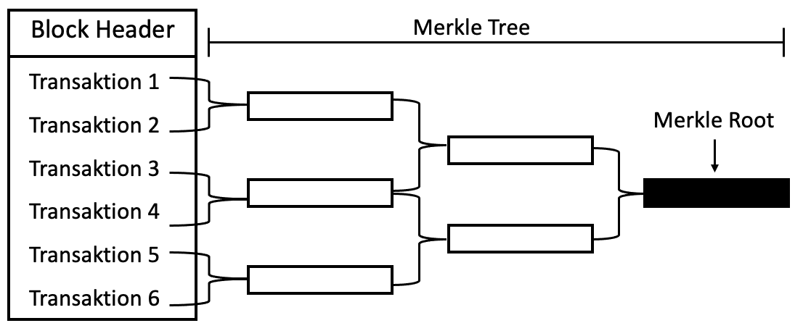

Hash Trees werden zur effizienten und sicheren Verifikation von großen Datenstrukturen beziehungsweise ihrer Inhalte verwendet. Merkle Trees werden bei Kryptowährungen verwendet. Sie bieten Konsistenzprüfung, Datenverifizierung und Datensynchronisation. Mit Hilfe von Merkle Trees kann sichergestellt werden, dass die Datenblöcke einer Blockchain unbeschädigt und unverändert empfangen wurden.
Eine Merkle Root wird gebildet, indem immer zwei Transaktions-IDs miteinander gehasht werden. Diese Merkle Root wird dann im Block Header angegeben, wodurch jeder Header eine kurze Info über alle im Block vorhandenen Transaktionen sowie einen kürzeren Weg zur Prüfung der Integrität bietet.
